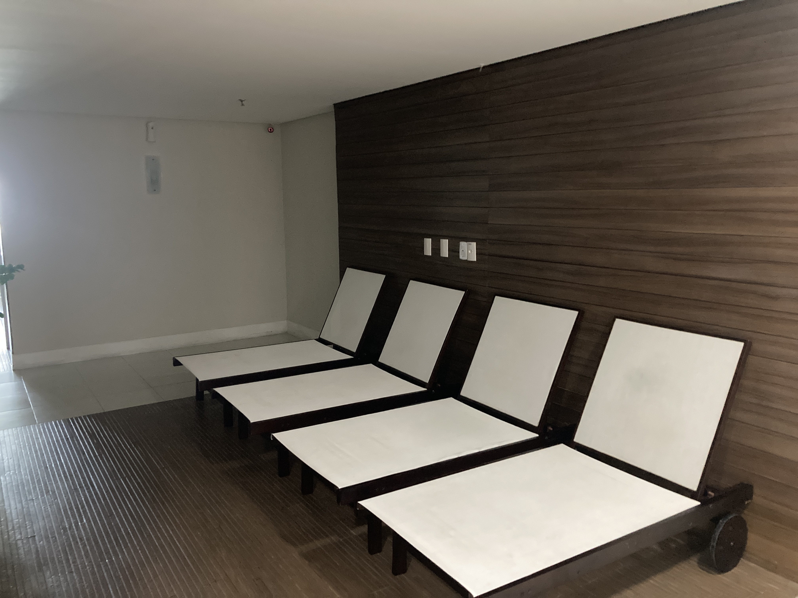

Sala de relaxamento / espreguiçadeiras
Estudo de reaproveitamento do mobiliário existente, com troca visual de estofados/acabamentos e melhor ambientação.

Situação atual da sala de relaxamento.
Clique aqui para ver a imagem maior

Proposta visual com reaproveitamento das espreguiçadeiras.
Clique aqui para ver a imagem maior
Sala de relaxamento / espreguiçadeiras
Este espaço hoje parece estar em uma condição intermediária: não chega a funcionar como uma sala de relaxamento bem resolvida, mas também não é apenas uma área de passagem. O resultado é uma área meio perdida, com espreguiçadeiras em quantidade exagerada e mal dimensionadas para o tamanho e o uso real do ambiente.
A proposta não precisa partir de uma grande obra. Pelo contrário: o caminho mais sensato é reduzir a quantidade de cadeiras, reorganizar a disposição, melhorar a iluminação e criar uma ambientação mais agradável.
A intervenção sugerida é simples e realista: quadro ou composição visual na parede, luz quente, menor quantidade de espreguiçadeiras e, se fizer sentido, pintura ou ajuste de acabamento. Mesmo sem transformar completamente o espaço, já é possível fazer com que ele deixe de parecer improvisado e passe a comunicar cuidado.
Como se trata de uma área de uso indefinido, o objetivo inicial deve ser estético e funcional: criar um ambiente mais calmo, menos atravancado e mais coerente com o padrão visual que o Costa España deseja construir.